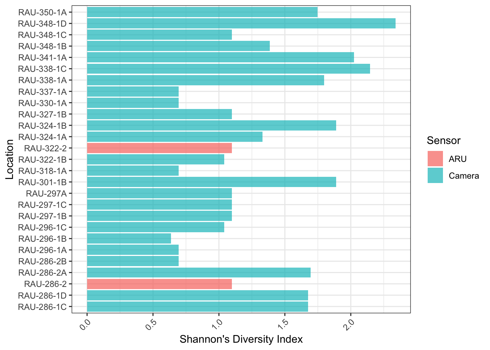

Report on the use of passive acoustic and remote camera monitoring for the Simpcw Resources Group
Authors
Affiliation
Alex MacPhail
Biodiversity Pathways Ltd.
Jack Creeggan
Biodiversity Pathways Ltd.
Published
March 24, 2026
Abstract
Note
This report is dynamically generated, meaning its results may evolve with the addition of new data or further analyses. For the most recent updates, refer to the publication date and feel free to reach out to the authors.
Figure 1: Locations from Simcpw Resources Group ARU and Camera Monitoring Program
Table 1: Locations surveyed.
Acoustic data
Note
Advanced users can also use wildrtrax with wt_get_sync(api = "organization_recordings", organization = 5647). Ensure you have correct access to the Organization as these projects are not currently published 2026-03-24.
The principal goal for data processing was to describe the acoustic community of species heard at locations while choosing a large enough subset of recordings for analyses. To ensure balanced replication, we randomly selected 8 recordings per location. Four were processed for 3-minutes between the hours of 3:00 AM - 7:59 AM (dawn period) and four between 20:00 - 23:59 PM (dusk period), ideally on four separate dates. Each of the selections were also chosen on days that did not have any inclement weather (heavy rain or wind), which would be unfavourable for bird surveys. Four samples ensures that there is a minimum number of samples being able to detect most species. Tags are made using count-removal ((farnsworth2002removal?), (time-removal?)) where tags are only made at the time of first detection of each individual heard on the recordings. Amphibian abundance was estimated at the time of first detection using the North American Amphibian Monitoring Program with abundance of species being estimated on the scale of “calling intensity index” (CI) of 1 - 3. Mammals such as Red Squirrel, were also noted on the recordings. We also verified that all tags that were created were checked by a second observer to ensure accuracy of detections (Table 2 and Table 3). In addition to human transcription, we also ensured that species were not missed at the location level using additional information from HawkEars ((huus2025hawkears?)), a North American multi-species acoustic classifier, at the task level to avoid false negatives, or missed detections by the tagger. After the data are processed in WildTrax, the wildrtrax package is used to download the data into a standard format prepared for analysis. The wt_download_report function downloads the data directly to a R framework for easy manipulation(see wildrtrax APIs).
Table 2: Summary of acoustic verified tags
Camera data
41 camera deployments were tagged by different observers using the WildTrax platform. Prior to manual tagging, MegaDetector ((beery2023megadetector?)) was run on the deployments to auto-tag images with humans, vehicles, and false detections. Bounding boxes were also placed around suspected detections. Detections of animals were tagged for species, and mammal detections received additional tags for count, age, and sex where identification was possible. In addition to animal species, observers manually tagged images with humans, vehicles, and false detections that MegaDetector failed to tag. Tags of mammal species were independently verified by two separate observers who did not participate in initial tagging. Count, age, and sex tags were also verified along with species, and detections tagged as “Unidentified” were verified in case species could be determined. Tags such as human or vehicle, were not verified. Following species verification, tags were quality checked for typos and logical inconsistencies.
Table 3: Summary of image verified tags
Results
A total of 36 species were detected across all monitoring sites. Species detections by location are summarized in Table 4, including the maximum count recorded for each species. Figure 2?@fig-community.
Table 4: Summary

Figure 2: Shannon diversity index at each location. A site with a high Shannon diversity index had many species detected in roughly equal numbers. A site with a low score was dominated by one or two common species, with few others present.
Discussion and Recommendations
Conduct ARU sampling during the breeding bird season